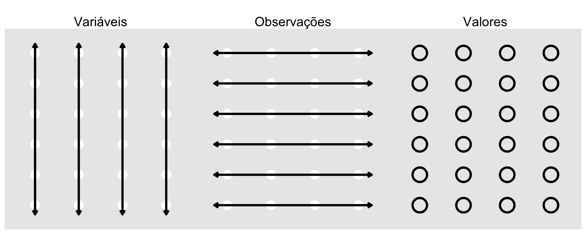

graph LR
%% Configuração de Estilo Visual (Alerta & Tradicional)
classDef default fill:#f9f9fb,stroke:#333,stroke-width:1.5px,font-family:sans-serif,font-size:13px;
classDef titulo fill:#C00000,stroke:#A00000,stroke-width:2px,color:#fff,font-weight:bold,font-size:15px;
classDef nota fill:none,stroke:#7F7F7F,stroke-width:1px,stroke-dasharray: 5 5,font-style:italic,color:#595959;
%% Elementos do Fluxo
T("FLUXO TRADICIONAL <br> Suscetível a Erros e Não Reprodutível"):::titulo
A("Banco Bruto <br> (Excel / SPSS)")
B("Manipulação <br> Manual")
C("Copiar <br> Saídas")
D("Colar no <br> Word")
N("(Perda de Rastreabilidade)"):::nota
%% Conexões e Direcionamentos
T --> A
A --> B
B --> C
C --> D
B -.-> N
%% Forçar estilo de alerta no título
style T fill:#C00000,color:#fff
Fundamentos da linguagem R para Psicologia
As armadilhas do fluxo de trabalho tradicional (“point and click”)
A dependência de softwares estatísticos operados por interface gráfica tradicional (onde o pesquisador clica em menus para gerar análises) introduz três possíveis vulnerabilidades metodológicas:
- Manipulação irreversível: Ao alterar diretamente dados em planilhas (como apagar uma linha de um participante atípico no Excel ou SPSS), o dado original é sobrescrito sem que fique registrado o critério exato ou a data da modificação.
- Erro humano na transcrição (copy-paste): Mover manualmente médias, desvios-padrão, p-valores e coeficientes das janelas de saída estatística para o processador de texto (Word) gera taxas elevadas de erros de digitação nos manuscritos submetidos.
- Opacidade de critérios: Meses após a coleta, o próprio autor frequentemente esquece quais itens foram invertidos, como os dados ausentes (missing data) foram tratados ou quais filtros de exclusão foram aplicados.
Em contrapartida, manuais modernos de análise de dados aplicados à Psicologia (Neth, 2023; Wickham et al., 2023) defendem que o aprendizado de linguagens baseadas em scripts permite automatizar o saneamento de dados e garante um fluxo reprodutível desde a importação até o relatório final.
Literate programming e o ecossistema Quarto
Para solucionar a opacidade do fluxo tradicional, a Ciência Aberta baseia-se no conceito de Literate Programming, formulado por Knuth (1984). Nesse modelo, a lógica teórica, o texto do artigo acadêmico e o código computacional que processa e analisa os dados coexistem em um único arquivo-fonte.
graph LR
classDef default fill:#f9f9fb,stroke:#333,stroke-width:1.5px,font-family:sans-serif,font-size:13px;
classDef titulo fill:#4472C4,stroke:#2F5597,stroke-width:2px,color:#fff,font-weight:bold,font-size:15px;
classDef nota fill:none,stroke:#7F7F7F,stroke-width:1px,stroke-dasharray: 5 5,font-style:italic,color:#595959;
%% Elementos do Fluxo
T("FLUXO REPRODUTÍVEL <br> R + Projetos Quarto"):::titulo
A("Banco Bruto <br> (.csv / .sav)")
B("Documento Quarto <br> (.qmd)")
C("Manuscrito Final <br> (.pdf / .docx / .html)")
N("(Execução 100% Automatizada)"):::nota
%% Conexões e Direcionamentos
T --> A
A --> B
B --> C
B -.-> N
%% Alinhamento visual do título no topo
style T fill:#4472C4,color:#fff
O que é o Quarto?
O Quarto é o sistema de publicação científica de última geração desenvolvido pela POSIT (mesma criadora do RStudio). Ele permite integrar escrita do texto (Markdown), blocos de código executável (R, Python ou Julia) e gerar documentos finais elegantes nos formatos PDF, Word (.docx), HTML ou apresentações de slides (Quarto Documentation Team, 2026).
Ao utilizar o Quarto em um projeto de pesquisa em Psicologia, as tabelas, os gráficos e os valores \(p\) presentes no texto são atualizados automaticamente sempre que o banco de dados é modificado ou corrigido.
Arquitetura de funcionamento do Quarto
Como detalhado por Wickham et al. (2023) e Quarto Documentation Team (2026), o Quarto é um sistema de publicação multilinguagem de última geração. Ao clicar no botão Render no RStudio, um pipeline de compilação em duas etapas é acionado:
- O
knitrexecuta todos os blocos de código R (chunks), calcula os resultados estatísticos, gera gráficos e transforma o arquivo.qmdem um documento intermediário de Markdown puro (.md). - O
Pandocconverte o arquivo.mdintermediário para o formato de publicação final escolhido (HTML, PDF, Word, ePub ou Slides).
Anatomia de um documento Quarto (.qmd)
Um arquivo Quarto é composto por três elementos:
O cabeçalho YAML
Fica no topo do arquivo, delimitado por três traços (---). Define metadados e parâmetros globais de renderização em sintaxe chave-valor:
---
title: "Relatório de Pesquisa Psicológica"
author: "Seu Nome"
date: today
format:
html:
toc: true
theme: cosmo
code-fold: true
bibliography: referencias.bib
---O texto formatado em Markdown
Utiliza marcações simples para formatação estrutural:
# Título Principal,## Subseção,### Sub-subseção.*Itálico*ou_Itálico_e**Negrito**ou__Negrito__.- Listas numeradas (
1.) e marcadores (*ou-). - Links:
[SBP](https://www.sbpnet.org.br).
Os blocos de código (code chunks)
Delimitados por três crases seguidas de {r}. Dentro do chunk, utiliza-se o comentário especial #| (conhecido como hashpipe) para definir as opções do bloco:
library(tidyverse)
# Código R aqui...Principais opções de Chunks (#| hashpipe):
| Parâmetro | Valores | Descrição |
|---|---|---|
eval |
true/false |
Define se o código R será executado durante a renderização. |
echo |
true/false |
Define se o código R aparecerá impresso no documento final. |
warning |
true/false |
Suprime mensagens de aviso do R no relatório final. |
message |
true/false |
Suprime mensagens de carregamento de pacotes (library()). |
include |
true/false |
Executa o código, mas esconde tanto o código quanto a saída. |
Métodos e boas práticas: o uso de projetos (.Rproj)
AvisoImportante
NUNCA utilize o comando setwd("C:/Users/SeuNome/Documentos/MinhaPesquisa") no R. Esse comando fixa um caminho absoluto do seu disco rígido e impede que o script seja executado no computador de um parecerista, orientador ou colaborador.
Em vez de fixar caminhos manuais, o RStudio trabalha com o conceito de Projetos (.Rproj). Quando você abre um Projeto no RStudio, ele define automaticamente a pasta raiz onde o arquivo .Rproj está salvo. Todos os caminhos para ler bancos de dados ou salvar relatórios passam a ser caminhos relativos (ex: "dados/brutos/pesquisa.csv").
O ecossistema de pacotes tidyverse
Na psicologia moderna, a reprodutibilidade e a legibilidade do código são tão importantes quanto a própria análise estatística. O tidyverse é uma coleção de pacotes (como dplyr, tidyr, ggplot2) projetados para compartilhar uma filosofia e estrutura de dados comuns.
Para encadear operações de forma lógica (como ler um banco () filtrar participantes () calcular médias), utilizamos o pipe nativo do R (|>). Ele passa o resultado da linha anterior como o primeiro argumento da função seguinte, eliminando a necessidade de criar dezenas de variáveis temporárias.
# Carregando o ecossistema tidyverse
library(tidyverse)Como ressaltam Wickham et al. (2023) e Neth (2023), grande parte do tempo gasto por pesquisadores em etapas de análise não é consumida no ajuste de modelos estatísticos, mas sim na adequação da estrutura do banco de dados.
O conceito de tidy data (dados organizados), formalizado por Hadley Wickham, estabelece uma estrutura padronizada entre a geometria da tabela e a semântica da pesquisa comportamental.
As três regras dos dados organizados (tidy data):
- Cada variável deve estar em sua própria coluna (ex.: idade, sexo, escore da escala).
- Cada observação (participante, resposta ou ponto temporal) deve estar em sua própria linha.
- Cada valor individual deve ocupar sua própria célula.

Onde ocorrem os erros mais comuns?
Em bancos de dados brutos originados de plataformas de coleta (ex.: Google Forms ou Qualtrics), é frequente encontrar violações dos princípios tidy:
- Células mescladas ou notas de cabeçalho: Dificultam a leitura automatizada pelo R.
- Variáveis codificadas nos nomes das colunas: Exemplo de tabela com colunas chamadas
Pre_TesteePos_Teste, em vez de uma colunaTempoe outra colunaEscore. - Múltiplas informações em uma só célula: Exemplo de registrar “Feminino / 25 anos” na mesma coluna.
Estruturação de dados com tibbles
Em vez dos data.frame tradicionais, o tidyverse utiliza tibbles. Elas são estruturas de dados mais inteligentes que não alteram o tipo de variáveis textuais por padrão e possuem uma visualização muito mais limpa no console.
Vamos simular um banco de dados fictício de uma pesquisa sobre Estresse Percebido e Autoeficácia.
# Criando um banco de dados moderno (tibble)
banco_psico <- tibble(
id = 1:6,
idade = c(19, 22, 35, 41, 28, 50),
genero = c("Feminino", "Masculino", "Feminino", "Não-binário", "Masculino", "Feminino"),
grupo = c("Intervenção", "Controle", "Intervenção", "Controle", "Intervenção", "Controle"),
estresse_t1 = c(24, 15, 28, 12, 22, 19),
autoeficacia = c(12, 18, 11, 20, 14, 15)
)
# Visualizando a tibble
banco_psico# A tibble: 6 × 6
id idade genero grupo estresse_t1 autoeficacia
<int> <dbl> <chr> <chr> <dbl> <dbl>
1 1 19 Feminino Intervenção 24 12
2 2 22 Masculino Controle 15 18
3 3 35 Feminino Intervenção 28 11
4 4 41 Não-binário Controle 12 20
5 5 28 Masculino Intervenção 22 14
6 6 50 Feminino Controle 19 15Manipulação de dados com dplyr e o pipe nativo |>
O pacote dplyr fornece uma “gramática” para manipulação de dados. Vamos ver as principais funções combinadas com o pipe nativo.
Filtrando e selecionando variáveis
Imagine que precisamos analisar apenas as participantes do gênero Feminino e queremos focar exclusivamente nas variáveis de idade e estresse.
banco_filtrado <- banco_psico |>
filter(genero == "Feminino") |>
select(id, idade, estresse_t1)
banco_filtrado# A tibble: 3 × 3
id idade estresse_t1
<int> <dbl> <dbl>
1 1 19 24
2 3 35 28
3 6 50 19Criando novas variáveis com mutate()
Em psicologia, frequentemente padronizamos escores ou criamos categorias (ex: faixas etárias). Vamos usar o mutate() combinado com case_when() para categorizar os participantes pela idade.
banco_mutado <- banco_psico |>
mutate(
faixa_etaria = case_when(
idade < 25 ~ "Jovem Adulto",
idade >= 25 & idade < 40 ~ "Adulto",
idade >= 40 ~ "Adulto Maduro"
),
# Transformando em fator imediatamente
faixa_etaria = factor(faixa_etaria)
)
banco_mutado |> select(id, idade, faixa_etaria)# A tibble: 6 × 3
id idade faixa_etaria
<int> <dbl> <fct>
1 1 19 Jovem Adulto
2 2 22 Jovem Adulto
3 3 35 Adulto
4 4 41 Adulto Maduro
5 5 28 Adulto
6 6 50 Adulto MaduroEstatísticas descritivas agregadas com summarise()
A verdadeira força do tidyverse aparece quando queremos agrupar dados. Vamos calcular a média e o desvio-padrão do estresse, mas dividindo os resultados por grupo (Intervenção vs. Controle).
tabela_descritiva <- banco_psico |>
group_by(grupo) |>
summarise(
N = n(),
Média_Estresse = mean(estresse_t1),
DP_Estresse = sd(estresse_t1)
)
tabela_descritiva# A tibble: 2 × 4
grupo N Média_Estresse DP_Estresse
<chr> <int> <dbl> <dbl>
1 Controle 3 15.3 3.51
2 Intervenção 3 24.7 3.06Escrita no texto via código inline
Extraindo os dados diretamente da nossa tabela para o texto acadêmico utilizando o pipe nativo para isolar o valor exato:
Os resultados preliminares indicam que o grupo que recebeu a Intervenção apresentou uma média de estresse de
`{r} round(m_intervencao, 2)`, enquanto o grupo de Controle apresentou uma média de`{r} round(m_controle, 2)`.
Exercícios
Abra o seu arquivo .qmd e resolva os seguintes passos utilizando obrigatoriamente o pipe nativo (|>) e funções do tidyverse:
- Crie uma nova coluna chamada
estresse_centralizadoque seja o valor deestresse_t1menos a média geral de estresse do banco (Dica: usemutate()emean()). - Filtre o banco de dados para manter apenas pessoas com
idadesuperior a 20 anos. - Agrupe o banco por
generoe calcule a média e o desvio-padrão da variávelautoeficacia. - Renderize o arquivo e verifique se o código rodou sem erros.